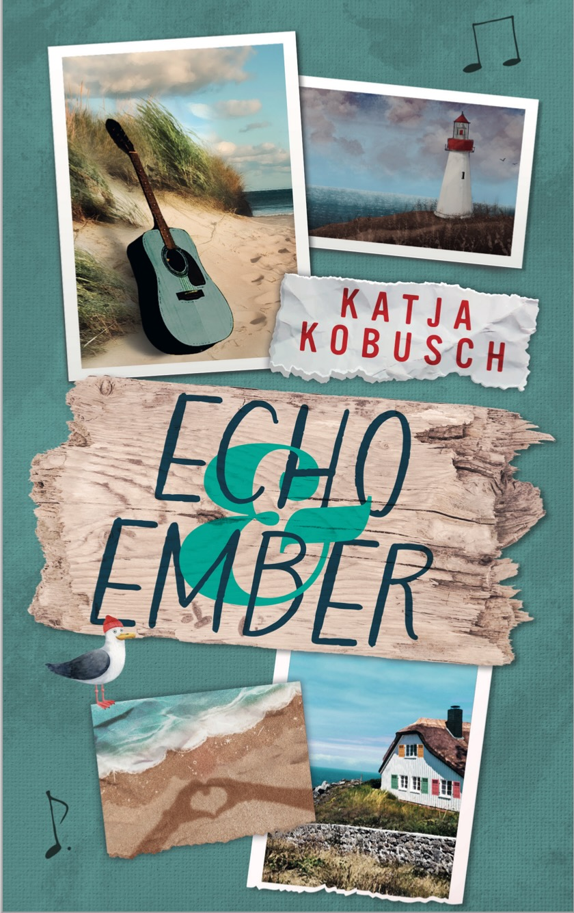

Elodies Geheimnis – Leseprobe
»HAUPTSACHE, ES GIBT KEINEN DORSCH«, sagte meine Mutter und blieb ruckartig stehen, als sich einer ihrer Absätze in der Rille zwischen zwei Kopfsteinen verfing. »Himmel, herrje.« Sie zog den Pumps heraus und betrachtete genervt die Erdklümpchen, die jetzt daran hafteten. »Wieso kann dieses elende Wochenende nicht schon vorbei sein?«
»Viktoria«, setzte mein Vater in seinem beruhigenden Tonfall an, »du solltest nicht …«
Ich blendete ihn aus. Ihn, meine nörgelnde Mutter und meinen älteren Bruder Leon, der ohnehin mit seinem Handy beschäftigt war. Vermutlich checkte der werte Herr Wichtig mal wieder die aktuellen Börsenkurse. Keiner von ihnen hatte Augen für die Schönheit des Gebäudes, auf das wir zugingen: eine alte Jugendstilvilla, die zu einem Boutique-Hotel umgewandelt worden war.
Im abendlichen Dämmerlicht hoben sich ihre tiefgrünen Fensterläden vom Weiß der Wände ab. Wilder Wein umrankte weite Teile der Fassade. Jetzt, Mitte Oktober, waren die Blätter rötlich verfärbt und verströmten ein erdig-würziges Aroma. Goldenes Licht fiel durch die Fenster des Eingangsbereichs nach draußen. Die Villa Klüpfenhagen schien von innen heraus zu glühen.
»Atemberaubend«, murmelte ich und die Aufregung darüber, hier zu sein, sprudelte wie Kohlensäure durch meinen Körper. Das Hotel wirkte schon von außen unglaublich heimelig und ich konnte es kaum erwarten, hineinzugehen.
»Olivia?«
»Hm?« Widerwillig drehte ich mich zu meiner Mutter um.
»Mein Seidenschal liegt noch im Auto. Hol ihn mir schnell, ja? Meine Schuhe verkraften dieses verflixte Kopfsteinpflaster nicht.«
Ich seufzte, streckte die Hand aber nach dem Schlüssel aus. Meine Mutter war schon die ganze Herfahrt von München schnell reizbar gewesen, und ich hatte keine Lust, mich mit ihr anzulegen.
»Wir checken schon mal ein, Livchen.« Mein Vater zupfte im Vorbeigehen an einer meiner dunklen Haarsträhnen. Das machte er schon, solange ich denken konnte. Und wenn er mich mit siebzehn immer noch Livchen nannte, würde das wohl ewig so bleiben.
Meine Mutter fing wieder mit dem verflixten Kopfsteinpflaster an und ich war froh, wenigstens für einen Moment etwas Abstand zwischen mich und meine Familie bringen zu können. Die knapp achtstündige Autofahrt hierher, ins norddeutsche Dorf Klüpfenhagen, war die längste Zeit gewesen, die wir in den letzten Monaten auf engem Raum miteinander verbracht hatten.
Mir graute jetzt schon vor der Rückfahrt in drei Tagen.
Meine Eltern und Leon hielten es für reine Schikane, dass Trude – alias meine Lieblingsoma – uns ausgerechnet in ›dieses Kaff‹ eingeladen hatte, um ihren achtzigsten Geburtstag zu feiern. Ich war die Einzige, der es nichts ausgemacht hatte, dafür einmal quer durch die Republik zu fahren.
Ich lief zum Auto, angelte den Schal vom Beifahrersitz und lehnte mich gegen die Tür. Die Abendluft war herrlich frisch und half, die sich anbahnenden Kopfschmerzen zu vertreiben. Außerdem hatte ich von hier einen tollen Blick auf das Hotel.
In allen Fenstern des oberen Stockwerks standen kleine Lämpchen, die den Gaslaternen des neunzehnten Jahrhunderts nachempfunden waren. Ihr Licht war dezent und wirkte irgendwie geheimnisvoll. Ich atmete tief ein und spürte, wie die Anspannung der langen Fahrt allmählich nachließ. Das Hotel faszinierte mich. Wie es sich wohl angefühlt hatte, im letzten Jahrhundert hier zu leben?
»Olivia!«
Ich zuckte zusammen, als Leons genervte Stimme zu mir herüberschallte.
»Kommst du? Es gibt ein Problem.«
»Natürlich.«
Leon nickte zufrieden. Er verstand meine Antwort offensichtlich als Zustimmung und nicht als das, was sie eigentlich war: Resignation.
Natürlich gab es ein Problem. Natürlich fanden meine Eltern das Haar in der Suppe, noch bevor sie überhaupt auf dem Tisch stand. Und es war wie immer an mir, die Wogen zu glätten. Ich war der Diplomat der Familie. Oder der ›Gutmensch‹, wie meine Eltern es abschätzig nannten, wenn ich Handwerkern einen Kaffee anbot oder für den Fensterputzer die Simse freiräumte.
Mir hingegen ging das überhebliche Getue meiner Familie oft gegen den Strich, und auch wenn ich selten etwas dagegen sagte, distanzierte ich mich innerlich davon. Das war meine kleine, stille Art der Rebellion.
»Hopp, hopp«, rief Leon und war wieder im Hotel verschwunden, noch bevor ich den Parkplatz überquert hatte. Die Tür fiel genau vor meiner Nase zu.
»Danke. Sehr freundlich«, murmelte ich und atmete noch einmal tief durch, bevor ich sie aufzog und die Lobby betrat.
Es war, als wäre ich über eine Zeitschwelle getreten und direkt im Gestern gelandet: Dutzende Kerzen erhellten den Raum, ihre Flammen warfen flackernde Schatten über die antike Einrichtung. Ich blieb staunend stehen und konnte mich gar nicht sattsehen.
Das edle Jugendstilsofa links von mir sah so bequem aus, dass ich mich am liebsten sofort hineingesetzt hätte. Zwei passende Stühle und ein niedriger, massiver Tisch aus dunklem Holz komplettierten die Sitzecke. Eine zartgrüne Tapete, bedruckt mit stilisierten Ginkgoblättern, zierte die Wände.
Elodies Geheimnis erscheint am 17.10.2026 – jetzt schon vorbestellen bei Amazon!